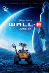

电影介绍




头脑特工队 Inside Out (2015)
导演：彼特·道格特 / 罗纳尔多·德尔·卡门
评分：
剧情简介……
可爱的小女孩莱莉出生在明尼苏达州一个平凡的家庭中，从小她在父母的呵护下长大，脑海中保存着无数美好甜蜜的回忆。当然这些记忆还与几个莱莉未曾谋面的伙伴息息相关，他们就是人类的五种主要情绪：乐乐、忧忧、怕怕、厌厌和怒怒。
机器人瓦力 WALL·E (2008)
导演：安德鲁·斯坦顿
评分：
剧情简介……
公元2805年，人类文明高度发展，却因污染和生活垃圾大量增加使得地球不再适于人类居住。地球人被迫乘坐飞船离开故乡，进行一次漫长无边的宇宙之旅。临行前他们委托Buynlarge的公司对地球垃圾进行清理，该公司开发了名为WALL·E 的机器人担当此重任。
驯龙高手 How to Train Your Dragon (2010)
导演：迪恩·德布洛斯 / 克里斯·桑德斯
评分：
剧情简介……
维京岛国的少年小嗝嗝是部落统领伟大的斯托里克的儿子，他非常想像自己的父亲一样亲手屠龙——这些飞龙是岛上维京人放牧羊群的主要天敌——但他每次出现在部落屠龙的战斗中都只给大家徒增烦恼。
美食总动员 Ratatouille (2007)
导演：布拉德·伯德 / 简·皮克瓦
评分：
剧情简介……
小老鼠雷米在嗅觉方面有着无与伦比的天赋，不想过与垃圾堆为伴的生活，心怀成为五星大厨的梦想。一个偶然的机会，他认识了古斯特餐厅的学徒林奎尼，这个倒霉的学徒生性害羞，在厨艺上更是没有什么天赋，并且遭到餐厅大厨的排挤，即将被解雇。这一人一鼠结成了奇特的联盟：雷米奉献自己极富创造力的大脑。操作林奎尼前台“表演”。